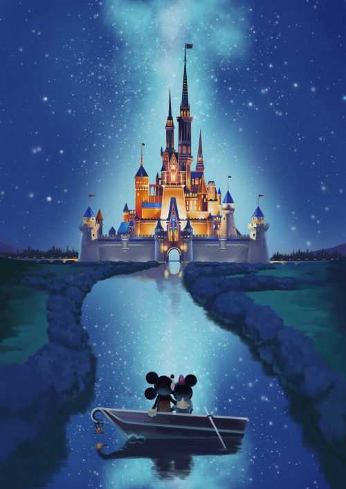

My name is Madison Seegmiller I am a student here at BYU. I am currently applying to the EXDM program. I have loved my time here at BYU. Check out my BYU experiences so far!
I got married a year ago to my best friend Davis. I love him so much! Below is a picture of me and him on our speical day. I am so happy that I was able to have all of my siblings and parents there to share Davis and I special day. that day was truly magical!

One of my favorite vacations is going to Disneyland! I love riding all the fun rides and seeing all of the Princess. One of my favorite ride is Starwars Rise of the Resistance. It is such an awesome ride! I also love all the yummy treats Disneyland has to offer.
I also love to travel the world. I have been to New York, Flordia, Michigan, Kentucky, California, and two of the Hawaii Islands. I enjoyed going to Oahu and seeing all of the amazing beaches. Most of all I loved learning about the culture of the different Polynesian Islands. Maui was also stunning! Their tide pools were awesome! I loved boogie boarding in the ocean. I would love to go to Europe and see all the beautiful architecture. I would love to go to Portugal and see where my husband served his mission.